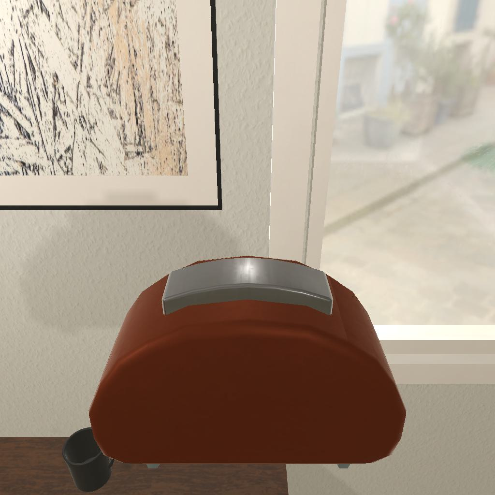
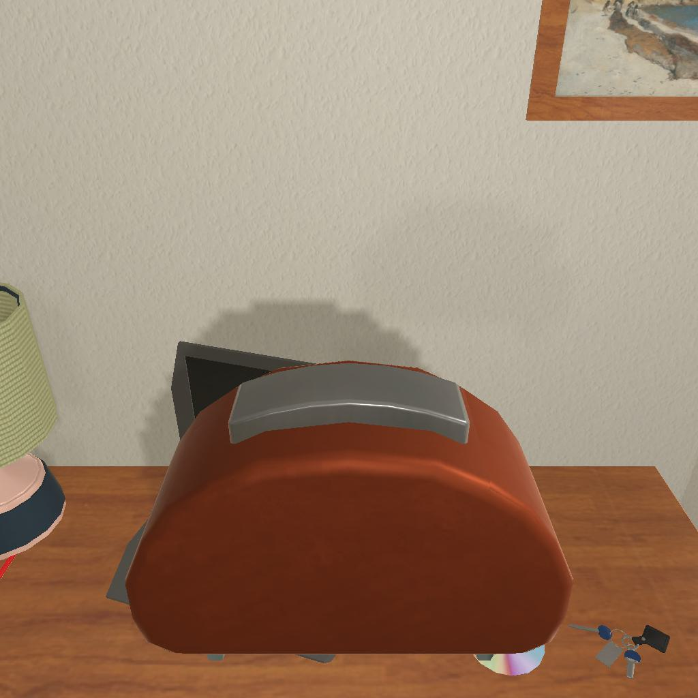
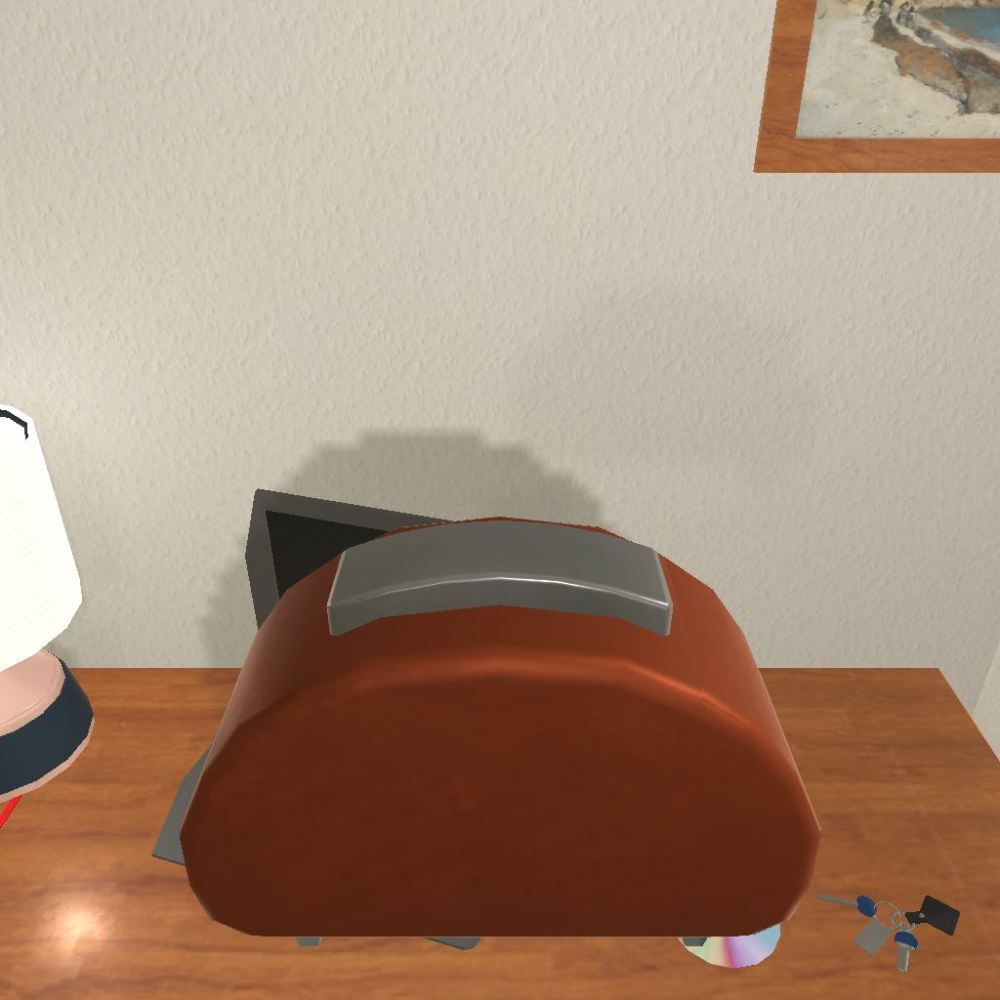

---------------------------------------------------------task: 1---------------------------------------------------------
--------------------------------------------------------------------------------------------------------------------------------------------------------------------
--------------------------------------------------------------------------------------------------------------------------------------------------------------------
Step:--------------------------------------------------------------------------7-------------------------------------------------------------------------------
----------------------------------------
VLM Prompt:
Image1:
Image2:
Image3:
**Instruction**
1. Analyze the provided images to identify all visible household objects and compare the difference between images (e.h. whether the object is opened or not and taken on hand or not), focusing on those relevant to the task description "examine the alarmclock with the desklamp."
2. Use the analysis of images and the task hint "The agent must find an object of the desired type, locate and turn on a light source with the desired object in-hand." to answer the question: what is the most reasonable action in the choices for the task description "examine the alarmclock with the desklamp"?
3. Decide and write the answer using the template: The answer is: (i): , where i is the real number. If there is no desired object in images, search every place based on **Initial Observation** to find the object. And if no one is exactly correct, choose a similar answer.
**Initial Observation**
You are in the middle of a room. Looking quickly around you, you can see bed (1), dresser (1), drawer (1-10), garbagecan (1), shelf (1-7)
**Answer Choices**
(1): go to bed 1
(2): go to drawer 1
(3): go to drawer 2
(4): go to drawer 3
(5): go to drawer 4
(6): go to drawer 5
(7): go to garbagecan 1
(8): go to drawer 6
(9): go to drawer 7
(10): go to drawer 8
(11): go to drawer 9
(12): go to drawer 10
(13): go to shelf 2
(14): go to shelf 4
(15): go to shelf 5
(16): go to shelf 6
(17): go to shelf 7
(18): put alarmclock 1 in/on dresser 1
(19): use desklamp 1
(20): examine alarmclock 1
(21): examine dresser 1
**Answer**
Let's think step by step by following the instructions.
----------------------------------------
----------------------------------------
Original Response:
1. Analyzing the images:
- Image 1 shows an alarm clock on a dresser with a window in the background. There is also a CD, a small figurine, and a mug on the dresser, with a bookshelf containing books and CDs to the right.
- Image 2 is a close-up of the alarm clock on the dresser, with a clear view of the window and the artwork on the wall. No other objects are in hand or appear to be interacted with.
- Image 3 shows the alarm clock from a different angle, with a lamp visible to the left and a picture frame on the wall. Again, no objects are in hand or appear to be opened.
2. Task hint analysis:
The agent must find the alarm clock, which is visible in all images, and locate and turn on a light source with the desired object in hand. The task description specifies examining the alarm clock with the desk lamp, which suggests the need to interact with the desk lamp to provide light for examination.
3. Decision:
Based on the task description and the images provided, the most reasonable action is to turn on the desk lamp to provide light for examining the alarm clock. Since the alarm clock is already on the dresser and no movement to another location is necessary, the action related to the desk lamp is the most relevant.
The answer is: (19): use desklamp 1.
----------------------------------------
----------------------------------------
>>> Refine Original VLM Response and Get Pure Action: use desklamp 1
----------------------------------------
-----------------------------------------------------------------
Running time: 12.300033569335938 seconds
Total Money: 0.6662299999999999
-----------------------------------------------------------------
-----------------------------------------------------------------
Text Observation:You turn on the desklamp 1.
-----------------------------------------------------------------
SUCCEED